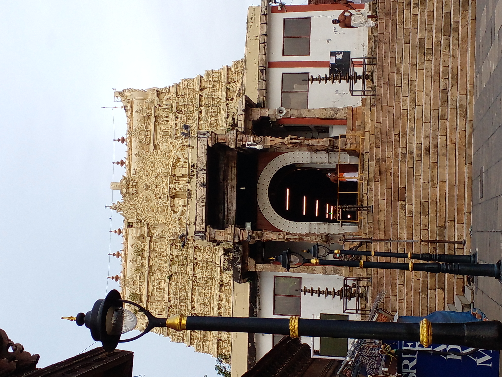
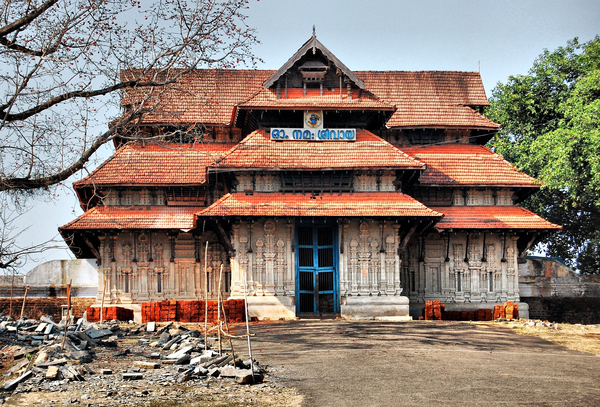
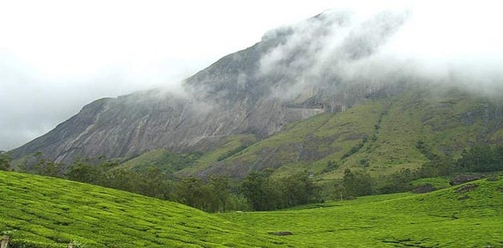
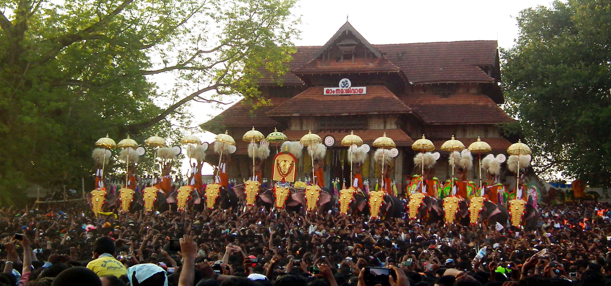

“God's Own Country with Nature, Culture, and Peace”
Overview
Kerala is a coastal state in southern India known for its greenery and waterways.
It has a rich cultural heritage and high literacy rate.
The state is famous for backwaters, beaches, and hill stations.
Kerala attracts tourists from all over the world.
History And Background
Kerala has a long and well-documented history that goes back to ancient times.
Because of its rich spices like pepper and cardamom, Kerala became an important center of international trade with Arabs, Romans, Chinese, and Europeans.
This early contact with different cultures helped shape Kerala’s open and inclusive society.
In ancient and medieval times, Kerala was ruled by powerful kingdoms that supported art, literature, and education.
The region developed a unique culture influenced by Hinduism, Islam, and Christianity, all living together in harmony.
Kerala also witnessed strong social reform movements that promoted equality, education, and social justice.
During British rule, Kerala was part of different administrative regions.
After India’s independence, the modern state of Kerala was formed in 1956 on a linguistic basis.
Since then, Kerala has become known for high literacy, social development, and progressive governance.
Today, Kerala proudly preserves its historical heritage while continuing to grow as a modern and culturally rich state.
Culture and Lifestyle
Kerala has a rich and diverse culture shaped by history, nature, and social values.
People of Kerala are known for their simple living, high literacy, and respect for education.
Family bonds are strong, and community life plays an important role in society.
Traditional art forms such as classical dance, folk performances, and music are an important part of Kerala’s culture.
Festivals are celebrated with great joy and bring people of different communities together.
Local traditions, rituals, and customs are carefully preserved and practiced.
The lifestyle of Kerala is closely connected to nature.
People follow a balanced way of living that respects the environment and promotes health.
Modern development exists alongside strong traditional values.
Overall, Kerala’s culture and lifestyle reflect harmony, discipline, and cultural pride.
Climate Information
Average Climate of Gujarat
Season
Months
Temperature(Approx.)
Tourist Crowd Level
Summer
March-June
25°C to 40°C
Fewer
Monsoon
July-September
22°C to 30°C
Medium
Winter
October-February
10°C to 25°C
High
Cities Overview
Kerala has many important cities that contribute to its culture, administration, and development.
These cities reflect a blend of traditional heritage and modern lifestyle.
Major Cities
Thiruvananthapuram-Planned capital city known for greenery and government institutions.
Kochi-Largest city and a major center for culture, education, and business.
Kozhikode- Globally known for textiles and diamond processing.
Thrissur-A strong education and heritage hub.
Kollam- Important trade and traditional industry center.
Alappuzha- Industrial and coastal city with major refinery presence.
Tourist Attraction
Alappuzha Backwaters
Alappuzha is famous for its beautiful backwaters and houseboat cruises.
It offers a peaceful experience of waterways, villages, and natural scenery.
Munnar
Munnar is a popular hill station known for tea gardens and cool climate.
It attracts tourists for its greenery, misty hills, and scenic views.
Varkala Beach
Varkala Beach is known for its unique cliffs beside the sea.
It is a popular spot for relaxation, sunsets, and coastal beauty.

Sree Padmanabhaswamy Temple
Sree Padmanabhaswamy Temple is one of the most famous temples in Kerala.
It is known for its beautiful architecture and spiritual importance.
Guruvayur Temple
Guruvayur Temple is an important Hindu pilgrimage site.
Devotees from all over India visit this temple with great faith.

Vadakkunnathan Temple
Vadakkunnathan Temple is an ancient temple known for Kerala-style architecture.
It is closely connected with Kerala’s cultural traditions and festivals.
Periyar Wildlife Sanctuary Periyar is a famous wildlife sanctuary surrounded by forests and hills.
It is known for wildlife, nature walks, and boat safaris.
Wayanad Wayanad is a scenic hill region known for forests, waterfalls, and wildlife.
It is popular for its natural beauty, trekking, and peaceful environment.
Kathakali Cultural Centre Kathakali is a famous classical dance form of Kerala.
It represents stories from epics through dance, music, and colorful costumes.
More about Kerala


Kerala is a beautiful state located on the southwestern coast of India.
It is known for its lush greenery, peaceful backwaters, scenic beaches, and rich natural beauty.
The state has a calm and healthy lifestyle that is closely connected to nature and the environment.
Kerala is often called “God’s Own Country” because of its breathtaking landscapes.
Kerala has a rich cultural heritage shaped by tradition and history.
People are known for their simple lifestyle, high literacy rate, and respect for education.
Classical art forms like Kathakali and Mohiniyattam reflect the cultural identity of the state.
Ayurveda and natural healing practices are an important part of Kerala’s lifestyle.
Festivals are celebrated with great joy and enthusiasm in Kerala.
Onam is the most important festival and is celebrated with flower decorations, cultural programs, and snake boat races.
Vishu marks the Malayalam New Year and is celebrated with traditional rituals and happiness.
Thrissur Pooram is famous for grand processions, decorated elephants, and traditional music.
These festivals bring people together and reflect unity, joy, and cultural pride.
Travel Information
Best Time to Visit
The best time to visit Kerala is October to March.
The weather is pleasant and ideal for sightseeing, beaches, and backwater trips.
Monsoon season is suitable for nature lovers and Ayurveda treatments.
How to Reach
Kerala is well connected by air, rail, and road.
Major cities have international and domestic airports.
Railway stations and state transport buses connect towns and tourist areas.
To book train tickets for traveling in Maharashtra, visit the official railway website irctc.co.in
To book air tickets for traveling in Maharashtra, visit official airline websites or trusted flight booking platforms.